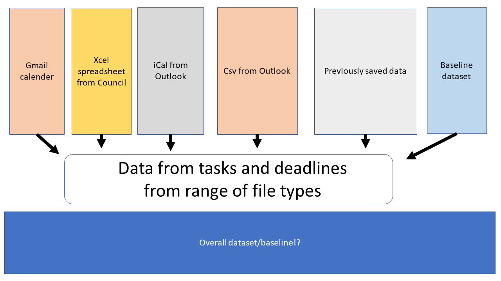

Chapter 3 Methods
Generally the concept is to create a baseline dataset of information and then extend this using dataspice to create a tidy format of data that can then be modelled and visualised using the tidyverse suite of tools.
library(lubridate)
# glimpse(datBASE)
# dt <- data.frame(mon = c(10, 4), day = c(10, 4), year = c(2017, 2018))
# with(dt, ymd(paste(year, mon, day, sep = "-")))
#> [1] "2017-10-10" "2018-04-04"
### to correct ggplot subset
datBASE1 <- datBASE %>%
dplyr::select(startDate,month, year, milestone, status, shortName, project) %>%
mutate(date = as.Date(startDate, "%d/%m/%y"))
# ,
# month = as.numeric(as.character(month)),
# year = as.numeric(year),
# milestone = as.factor(milestone),
# status = as.factor(status))
# glimpse(datBASE1)
# df$date <- with(df, ymd(sprintf('%04d%02d%02d', year, month, 1)))
df <- datBASE1
# library(lubridate)
# dt <- data.frame(mon = c(10, 4), day = c(10, 4), year = c(2017, 2018))
# with(dt, ymd(paste(year, mon, day, sep = "-")))
#> [1] "2017-10-10" "2018-04-04"
# datBASE1$date <- with(datBASE1, ymd(sprintf('%04d%02d%02d', year, month, 1)))
df <- df[with(df, order(date)), ]
# head(df)
text_offset <- 0.053.1 Data setup
## Warning: package 'knitr' was built under R version 4.0.2
There are multiple difference sources of information for this calendar. To be able to keep this upto date and current I need to write scripts for each data-source to my database of events (here). These are the following importing scripts:
- Timeline figures:
- Past
- Future
- Actions and milestones
3.2 Data/information
The purpose of this vignette is to show how, with reference to a real-world application: creating a timetable for a new module. It assumes you’ve installed the package following instructions in the README and have attached it as follows:
Overall this is time series data. A good general tutorial for this sort of data is here on youtube. There are several ways to visualise this data, below are two selected bits of code that do this. Overall there are two generalised datasets that may be helpful to other individuals for each project or combination of projects (for the APR for example). The data for this collection of tasks associated with timelines and targets. The baseline dataset is found in the .xlsx file named “baseline-dataset-calender.xlsx”. This is the base file I have been adding information to when I change the overall structure of the calendar projects.
3.3 Manual data
To begin with I have collated and restructured the avaliable data from downloaded .ics data as a csv and the UCSRC council calendar. This sorted data was orginally saved as “baseline-dataset-calender.xlsx” but as I couldnt get the xcel package to work nicely I converted each project dataset into a csv file stored in the ./data/ folder.
3.4 Baseline
## Warning: package 'readxl' was built under R version 4.0.2## Parsed with column specification:
## cols(
## eventCode = col_character(),
## shortName = col_character(),
## month = col_character(),
## startDate = col_character(),
## finishDate = col_character(),
## startTime = col_time(format = ""),
## endTime = col_time(format = ""),
## description = col_character(),
## project = col_character(),
## individualsNEEDED = col_character(),
## week = col_logical(),
## year = col_double(),
## milestone = col_character(),
## status = col_character(),
## PreCovidDATE = col_character(),
## Tasks = col_character(),
## Notes = col_character()
## )## Parsed with column specification:
## cols(
## eventCode = col_character(),
## shortName = col_character(),
## month = col_character(),
## startDate = col_character(),
## finishDate = col_character(),
## startTime = col_time(format = ""),
## endTime = col_time(format = ""),
## description = col_character(),
## project = col_character(),
## individualsNEEDED = col_character(),
## week = col_double(),
## year = col_double(),
## milestone = col_character(),
## status = col_character()
## )
## Parsed with column specification:
## cols(
## eventCode = col_character(),
## shortName = col_character(),
## month = col_character(),
## startDate = col_character(),
## finishDate = col_character(),
## startTime = col_time(format = ""),
## endTime = col_time(format = ""),
## description = col_character(),
## project = col_character(),
## individualsNEEDED = col_character(),
## week = col_double(),
## year = col_double(),
## milestone = col_character(),
## status = col_character()
## )3.5 .xlsx
These are excel workbooks. For now this is very simple and works with the current version of excel files (2020). Each “sheet” of the excel file contains a single projects information. This is then converted to a csv file when needed. In the future each project will have its own file that can be added to or modified in a shiny interactive web app.
A key aspect of these R scripts is the date format. This has been challenging to work with but currently I have the following notes on the transformation of the date/time data from excel and manually (with csv file below).
3.6 .csv
Generally the data can be imported as a csv, or other form.
## Parsed with column specification:
## cols(
## .default = col_character(),
## `Start Time` = col_time(format = ""),
## `End Time` = col_time(format = ""),
## `All day event` = col_logical(),
## `Reminder on/off` = col_logical(),
## `Reminder Time` = col_time(format = ""),
## `Billing Information` = col_logical(),
## Mileage = col_logical(),
## Private = col_logical(),
## `Show time as` = col_double()
## )## See spec(...) for full column specifications.3.8 Other data
Bernd and others have made timelines in R using the following R script:
Aspects of this simple timeline are incoperated as so:
3.8.1 Action tasks
Table by the group of project month or something else???
3.8.1.1 Table 1
##
## council invert PhD src
## june 1 4 4 8
## july 1 0 1 4
## august 0 8 3 4
## september 0 0 1 4
## october 0 0 2 4
## november 1 0 1 6
## december 0 0 1 113.8.1.2 Table 2
## , , = At Risk
##
##
## council invert PhD src
## june 0 0 3 0
## july 0 0 0 0
## august 0 0 1 0
## september 0 0 0 0
## october 0 0 0 0
## november 0 0 0 0
## december 0 0 0 0
##
## , , = Complete
##
##
## council invert PhD src
## june 0 0 0 0
## july 0 0 0 0
## august 0 3 1 4
## september 0 0 1 4
## october 0 0 2 0
## november 0 0 0 0
## december 0 0 0 0
##
## , , = Critical
##
##
## council invert PhD src
## june 0 0 0 0
## july 0 0 1 0
## august 0 0 0 0
## september 0 0 0 0
## october 0 0 0 0
## november 0 0 0 0
## december 0 0 0 0
##
## , , = Missed
##
##
## council invert PhD src
## june 0 0 0 0
## july 0 0 0 0
## august 0 1 0 0
## september 0 0 0 0
## october 0 0 0 0
## november 0 0 0 0
## december 0 0 0 0
##
## , , = On Target
##
##
## council invert PhD src
## june 1 4 1 8
## july 1 0 0 4
## august 0 4 1 0
## september 0 0 0 0
## october 0 0 0 4
## november 1 0 1 6
## december 0 0 1 113.8.2 Milestones timeline
“Coverting a dataframe into a timeline”
3.8.3 Factoring
3.8.4 Direction
#direction
positions <- c(0.5, -0.5, 1.0, -1.0, 1.5, -1.5)
directions <- c(1, -1)
line_pos <- data.frame(
"date"=unique(df$date),
"position"=rep(positions, length.out=length(unique(df$date))),
"direction"=rep(directions, length.out=length(unique(df$date)))
)
df <- merge(x=df, y=line_pos, by="date", all = TRUE)
df <- df[with(df, order(date, status)), ]
df$month_count <- ave(df$date==df$date, df$date, FUN=cumsum)
df$text_position <- (df$month_count * text_offset * df$direction) + df$position
head(df)## date startDate month year milestone status
## 1 2020-01-11 11/01/2020 october 2020 PhDmilestone 11 Complete
## 2 2020-03-12 12/03/2020 july 2020 srcmilestone18 On Target
## 3 2020-06-01 1/06/2020 august 2020 PhDmilestone 10 At Risk
## 4 2020-06-03 3/06/2020 september 2020 srcmilestone19 Complete
## 5 2020-06-04 4/06/2020 september 2020 srcmilestone20 Complete
## 6 2020-06-17 17/06/2020 september 2020 srcmilestone21 Complete
## shortName project position direction month_count text_position
## 1 FINALseminar PhD 0.5 1 1 0.55
## 2 disabilityDay src -0.5 -1 1 -0.55
## 3 Repropaper PhD 1.0 1 1 1.05
## 4 AcademicBoard src -1.0 -1 1 -1.05
## 5 AcademicIntegrity src 1.5 1 1 1.55
## 6 GradesReleased src -1.5 -1 1 -1.553.8.5 Counts
text_offset <- 0.2
df$month_count <- ave(df$date==df$date, df$date, FUN=cumsum)
df$text_position <- (df$month_count * text_offset * df$direction) + df$position
head(df)## date startDate month year milestone status
## 1 2020-01-11 11/01/2020 october 2020 PhDmilestone 11 Complete
## 2 2020-03-12 12/03/2020 july 2020 srcmilestone18 On Target
## 3 2020-06-01 1/06/2020 august 2020 PhDmilestone 10 At Risk
## 4 2020-06-03 3/06/2020 september 2020 srcmilestone19 Complete
## 5 2020-06-04 4/06/2020 september 2020 srcmilestone20 Complete
## 6 2020-06-17 17/06/2020 september 2020 srcmilestone21 Complete
## shortName project position direction month_count text_position
## 1 FINALseminar PhD 0.5 1 1 0.7
## 2 disabilityDay src -0.5 -1 1 -0.7
## 3 Repropaper PhD 1.0 1 1 1.2
## 4 AcademicBoard src -1.0 -1 1 -1.2
## 5 AcademicIntegrity src 1.5 1 1 1.7
## 6 GradesReleased src -1.5 -1 1 -1.73.8.6 Buffering times
3.8.7 December/January only
year_date_range <- seq(min(df$date) - months(month_buffer), max(df$date) + months(month_buffer), by='year')
year_date_range <- as.Date(
intersect(
ceiling_date(year_date_range, unit="year"),
floor_date(year_date_range, unit="year")
), origin = "1970-01-01"
)
year_format <- format(year_date_range, '%Y')
year_df <- data.frame(year_date_range, year_format)3.8.8 Interactivity
Shiny….